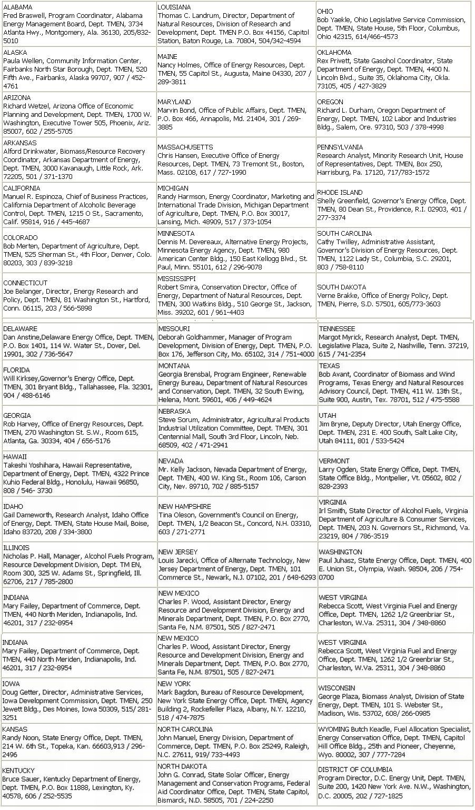

Here's the latest report in MOTHER's continuing series of articles covering every phase of the ethanol movement!
In the last issue of MOTHER, we published a brief interview - with Dee L. Flynn, Southeast Regional Regulatory Administrator of the federal Bureau of Alcohol, Tobacco, and Firearms - on the subject of homemade alcohol fuel. Now, as we promised, here is a list of folks who can provide official information for each one of the 50 states - plus the District of Columbia - regarding the production of ethanol for fuel. Naturally, anyone interested in making "liquid energy" should - in addition to applying for a federal alcohol producer's permit - contact his or her respective officials for instructions on complying with all state and local permit and bonding regulations ... sales, excise, use, or gross receipts tax requirements . . . and environmental, fire, health, labor, and public safety laws. The state's representatives can also make a potential fuel producer aware of any property or income tax reductions, grants, or loans that he or she might have otherwise overlooked.
EDITOR'S NOTE: A 99-page booklet entitled State Initiatives on Alcohol Fuels, compiled by the National Alcohol Fuels Commission, is available free of charge from the Office of the General Counsel, U.S. National Alcohol Fuels Commission, Dept. TMEN, 412 First Street S.E., Washington, D.C. 20003. (Those who are curious about the actual operation of small-scale fuel distilleries might want to turn to page 132 for details on one such installation in Missouri.)
Related Article
A self sufficient Energy/Livestock System
|
 |
|
|